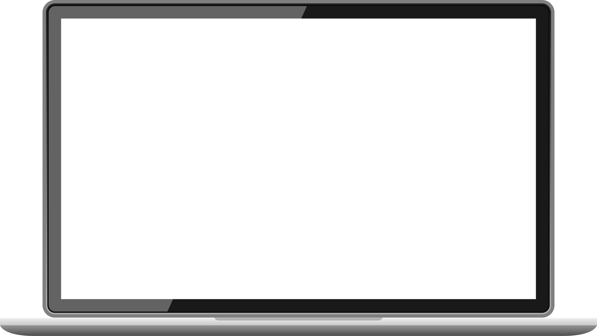
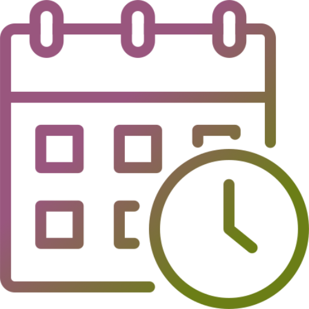
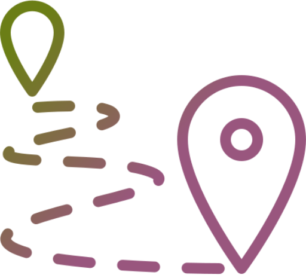
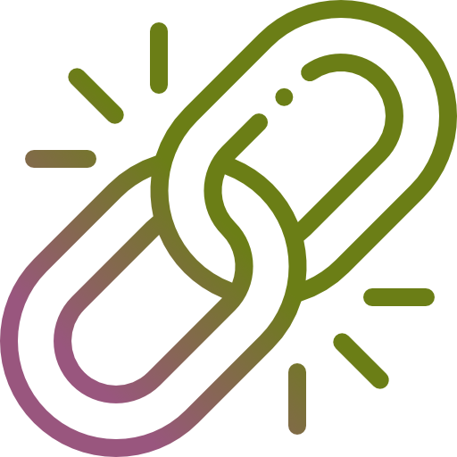

Semantic Layout
Correct heading hierarchy, semantic landmarks and meaningful ARIA labels.
UX/UI Case Study · 2025–2026 · Desktop | Mobile
The makeover 2.0
Ecodream has a lot of potential and a powerful concept, but it needs to be unlocked with a better navigation and a more powerful design! I redesigned the Ecodream e-commerce to make sustainable fashion feel more intuitive, more credible and easier to explore across desktop and mobile.


UX Research
UX/UI Design

Timeline2025–2026
(Academic project)
Figma, Maze,
Miro
Research insights
Design system
Hi-fi prototype
7 real participants
100% task completion
4.7/5 experience rating
"Ecodream is a sustainable brand that aims to produce eco-friendly bags and accessories while promoting environmental responsibility."
Its strengths lie in the message it wants to communicate, in its local production, and in the uniqueness and quality of its products.
However, the current e-commerce website has usability and accessibility issues that make it difficult to navigate and use, and the design needs to better reflect the brand’s values. The goal of this project was to redesign the full e-commerce experience without losing the essence of the brand.
Main friction points
Competitor analysis
Tested Prototypes
Real participants
01 / The Problem
Sustainable,
No breadcrumbs, limited filtering and no clear sense of where you are.
Users were lost before they even started browsing.
No filter, key pages were hard to reach, and every task took more steps than it should.
The navigation was confusing and clickable elements looked static.
Too much text, no hierarchy, same content repeated across pages.
Felt like a treasure hunt and not the fun kind!
Confusing Information Architecture
Poor Navigation and information discoverability
Bad Content Hierarchy & Readability
02 / Research
UnderstandingI started by browsing the site like a regular customer and the issues were impossible to miss. From there, I ran a full usability and accessibility audit, looked at what competitors were doing differently, and put together a survey to back up what I was already seeing. User personas and journey maps came last, to give a face to the problem.
What I did
What I discovered
Users can’t find what they need quickly.
No Filters and navigation sitemap.
Information is scattered and hard to scan.
Trust is low due to unclear communication.
Heuristic and Usability Score
★★★☆☆
★★★☆☆
★★★☆☆
★★★★☆
★★★☆☆
3.2 / 5
Accessibility Audit

Focus & Navigation
Links & InputsCorrect heading hierarchy, semantic landmarks and meaningful ARIA labels.
Descriptive alternative text and larger, more recognisable interface icons.
Logical keyboard order, visible focus states and clearer navigation tools.
Stronger contrast, readable font weights and a clearer information hierarchy.
Meaningful links, visible form labels and clear validation feedback.
Competitor Analysis
To understand where Ecodream was falling behind, I compared four key areas across competitors to understand what similar brands were doing better.
EcoDream wins hands down on content quality but falls apart when it comes to structure.| Macroarea analysed | Ecodream | Too Italy | Seama | Ritagli di G. | Miomojo | Turinmade |
|---|---|---|---|---|---|---|
| Website / UX generale | 0,5/5 | 3,2/5 | 3,6/5 | 2,5/5 | 3,4/5 | 2,3/5 |
| Brand | 5/5 | 2,9/5 | 0,7/5 | 0,7/5 | 5/5 | 1,4/5 |
| Products | 2,5/5 | 4,3/5 | 3,2/5 | 3,6/5 | 3,6/5 | 3,9/5 |
| Customers | 2,5/5 | 4,6/5 | 3,3/5 | 4,2/5 | 4,2/5 | 4,2/5 |
| Social Networks | 2/5 | 4/5 | 2,5/5 | 2/5 | 5/5 | 3/5 |
| Overall score | 2,3/5 | 3,8/5 | 2,8/5 | 2,7/5 | 4/5 | 3/5 |
Survey Outcome
I ran a survey covering demographics, sustainability awareness, budget range and shopping preferences. I also asked specific questions about the existing Ecodream shop: filter availability, product information clarity and navigation and explored what actually stops users from completing a purchase.
Question: Do you ever abandon your cart before completing a purchase? Why?“Uncertainty about payment and doubts about the product.”
“I realise the things I want to buy aren't really necessary, just an impulse of the moment.”
“If the total feels too high, I take a moment to think it over.”
“I don’t know if this is actually sustainable.”
The survey revealed that most users abandon their cart because the purchase feels unnecessary,
navigation issues and lack of product information come second. But that's exactly the point!
We can't control personal decisions or budgets, but we can make sure that a confusing navigation or poor communication are never the reason someone walks away.
03 / User Personas
Designed for
Based on the survey results, I built 3 user personas and mapped their journey through the site.
Every pain point I'd flagged during research showed up again.
No surprises there. Time to get to work and build this new design!
42 · Marketing Manager
Milan · 35% green awareness
Needs a spacious, resistant and professional bag for work, commuting and everyday essentials.
Fast information, durable materials, clear bag size and capacity
Shop quickly, look professional and use the same bag in different contexts
Scattered information, complicated checkout and products that feel not professional enough
Journey

32 · Software Engineer
Rome · 65% green awareness
Looks for quality, made-in-Italy products and prefers buying online after checking materials and reviews.
Filters, reviews, clear product availability and transparent material information
Buy responsibly, support made in Italy and invest in long-lasting products
No search filters, no reviews, unclear production details and complicated returns
Journey
24 · Fashion Intern
Milan - Paris · 90% green awareness
Strongly believes in sustainability and looks for vegan, trendy products that match her values and budget.
Vegan products, accessible prices, trend-led visuals and clear sustainability details
Find the right balance between fashion, sustainability and cost
Few vegan options, no promotions, fixed shipping costs and no live chat
Journey
04 / Design Direction
Designed to navigate
I restructured the information architecture, simplified the flows and started sketching wireframes on paper,
keeping in mind every issue and improvement that came out of the research phase.
Those sketches became digital wireframes in Figma, and from there a final UI, complete with a full design system!.
I stayed true to EcoDream's handcrafted identity, upgrading quality and clarity. Artisanal doesn't mean outdated.
Full Figma Project →What's changed?
Across five key pages, I translated research insights into a clearer and more intuitive shopping journey, improving navigation, content hierarchy and user confidence at every step.
05 / Prototype & Testing
Tested withA redesign so complex needed real validation. I ran a usability test to see how much the experience had actually improved and I observed real users navigating the e-commerce.
View Prototype →
7 participants
Mixed age range and backgrounds, interest in sustainability.
4 key tasks
Find brand values, explore the shop, find a product, add to wishlist.
Unmoderated test
Remote - Maze Recording.
Prototype
Mobile experience.
task completion rate
overall experience rating
found navigation as expected
06 / Conclusion
A better experience
The experience went from working against the user to working for them.
Sometimes you don't need to rebuild from zero, you just have to fix what's already there.
The next iteration would focus on:

Testing validated the overall direction, but it also showed me where the next steps should focus on.